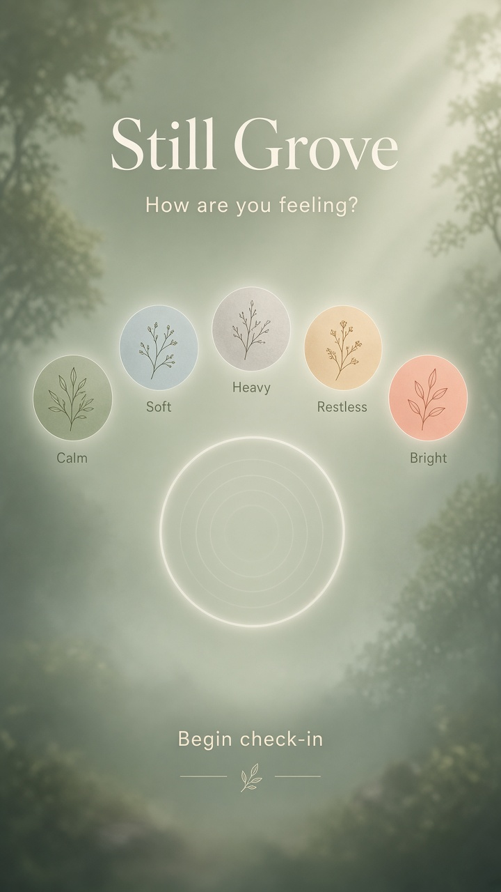
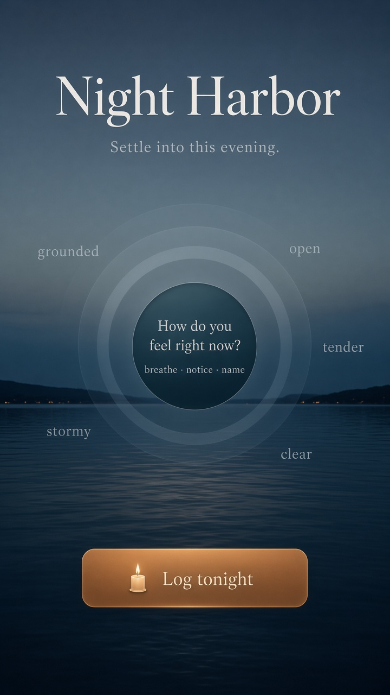
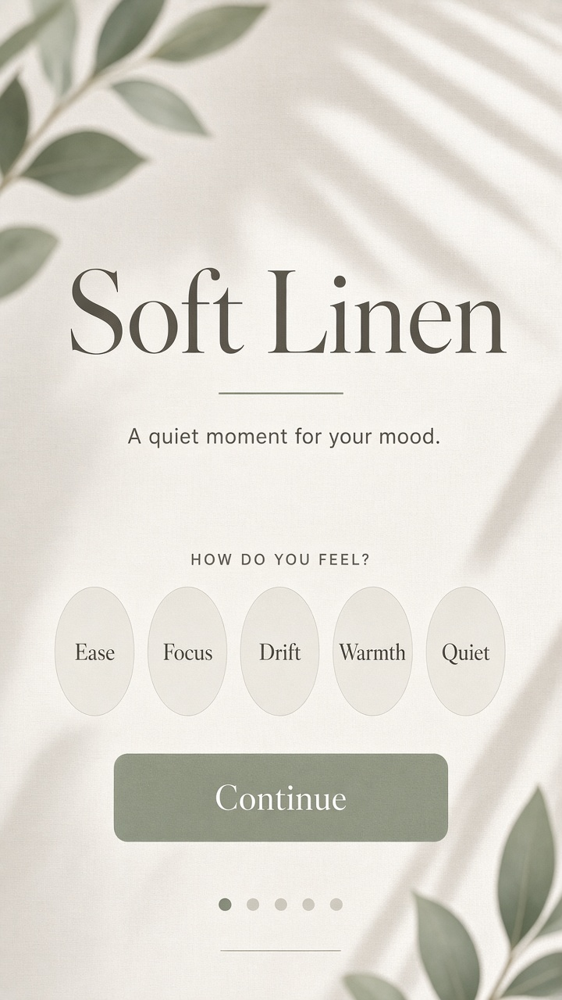

Mood tracker, meditation-led
Three design directions that borrow the pacing and atmosphere of meditation apps — soft light, breath-led motion, and quiet check-ins instead of dashboard chrome.


Brand first
Each first screen leads with the product name as the hero signal, then one prompt and one action.
Abstract moods
Soft marks and quiet words replace emoji faces — closer to meditation rituals than social stickers.
Breath as motion
Ripples, mist, and slow pulses create presence without noise or dashboard clutter.